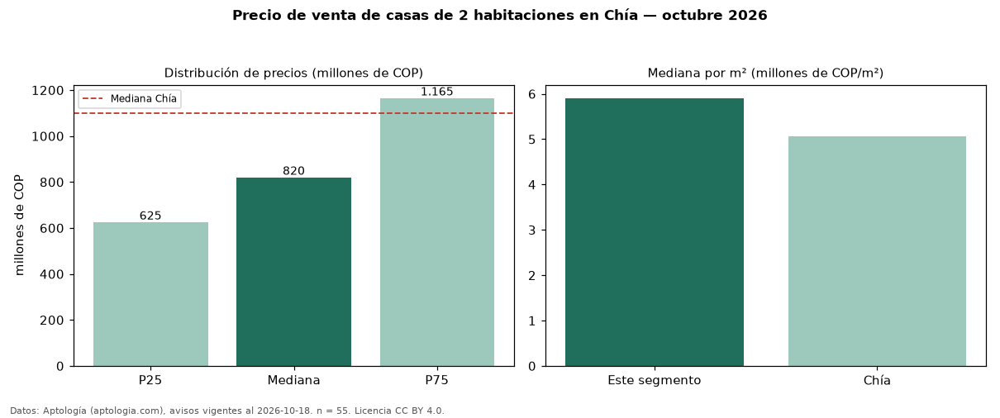

Precio de venta de casas de 2 habitaciones en Chía — octubre 2026
Con 55 avisos vigentes, el precio mediano de casas de 2 habitaciones en venta en Chía es COP 820 millones. Frente a la mediana de todos los casas en venta de Chía (COP 1,10 mil millones), queda 25 % por debajo. Por metro cuadrado, la mediana es COP 5,91 millones/m² (n = 53 avisos con área). El área mediana anunciada es 127 m². La administración mediana declarada es COP 575.000 al mes (n = 36). La mitad central de los avisos va de COP 625 millones a COP 1,17 mil millones (razón 1,9), una dispersión moderada. El estrato más frecuente es 4 (38 % de los avisos con estrato). 92 % de los avisos con el dato declara parqueadero o cochera. Datos: Aptología (aptologia.com), CC BY 4.0 — https://www.aptologia.com/venta/chia. Archivos: PDF, CSV con las cifras y gráfica PNG.

| Avisos únicos | 55 |
|---|---|
| Percentil 25 | COP 625.000.000 |
| Mediana | COP 820.000.000 |
| Percentil 75 | COP 1.165.000.000 |
| Mediana por m² | COP 5.905.511 |
Fuente: avisos vigentes de portales inmobiliarios recopilados por Aptología, deduplicados (mínimo 30 avisos únicos por celda). Precios pedidos, no cerrados. Fecha: 2026-10-18.